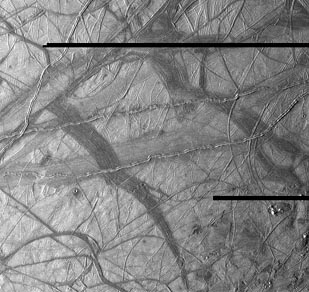
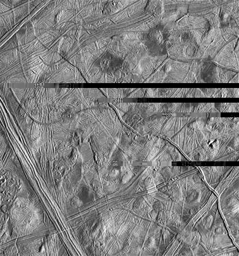
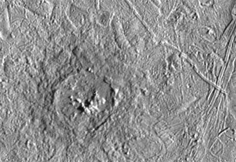
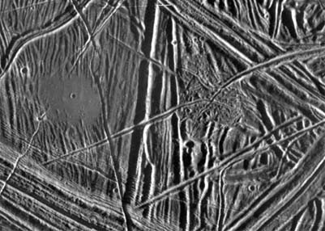

Europa's Surface as Seen by Galileo
|

NASA images from Galileo orbiter
| This view of Jupiter's moon Europa shows a portion of the surface that has
been highly disrupted by fractures and ridges. This picture covers an area
about 238 kilometers (150 miles) wide by 225 kilometers (140 miles), or
about the distance between Los Angeles and San Diego. Symmetric ridges in
the dark bands suggest that the surface crust was separated and filled with
darker material, somewhat analogous to spreading centers in the ocean basins
of Earth. Although some impact craters are visible, their general absence
indicates a youthful surface. The youngest ridges, such as the two features
that cross the center of the picture, have central fractures, aligned knobs,
and irregular dark patches. These and other features could indicate
cryovolcanism, or processes related to eruption of ice and gases.
This picture was taken at a distance of 40,973 kilometers (25,290 mi) on
November 6, 1996 by the Galileo spacecraft solid state imaging television
camera onboard the Galileo spacecraft during its third orbit around Jupiter.
|
|

| This moderate-resolution view shows the complex icy crust that has been extensively modified by
fracturing and the formation of ridges. The ridge systems superficially
resemble highway networks with overpasses, interchanges and junctions. From
the relative position of the overlaps, it is possible to determine the age
sequence for the ridge sets. For example, while the 8-kilometer-wide
(5-mile) ridge set in the lower left corner is younger than most of the
terrain seen in this picture, a narrow band cuts across the set toward the
bottom of the picture, indicating that the band formed later.
|
In turn, this
band is cut by the narrow 2- kilometer-wide (1.2-mile) double ridge running
from the lower right to upper left corner of the picture. Also visible are
numerous clusters of hills and low domes as large as 9 kilometers (5.5
miles) across, many with associated dark patches of non-ice material. The
ridges, hills and domes are considered to be ice-rich material derived from
the subsurface. These are some of the youngest features seen on the surface
of Europa and could represent geologically young eruptions.
This area covers about 140 kilometers by 130 kilometers (87 miles by 81
miles) and is centered at 12.3 degrees north latitude, 268 degrees west
longitude. Illumination is from the east (right side of picture). The
resolution is about 180 meters (200 yards) per pixel, meaning that the
smallest feature visible is about a city block in size. The picture was
taken by the Solid State Imaging system on board the Galileo spacecraft on
February 20, 1997, from a distance of 17,700 kilometers (11,000 miles)
during its sixth orbit around Jupiter.
|

| This is a more detailed view of Pwyll crater , which is shown in the southern hemisphere of a full view of Europa. It was photographed by the Solid State
Imaging system on the Galileo spacecraft on February 20, 1997 during its sixth orbit around
Jupiter. It was at a distance of 12,000 km (7,500 mi) from Europa.
|
This impact crater is located at 26 degrees south latitude, 271
degrees west longitude, and is about 26 kilometers (16 miles) in diameter.
Lower resolution pictures of Pwyll Crater taken earlier in the mission show
that material ejected by the impact can be traced for hundreds of miles
across the icy surface of Europa. The dark zone seen here in and around the
crater is material excavated from several kilometers (a few miles) below the
surface. Also visible in this picture are complex ridges.
|

| This close-up view of the icy surface of Europa, a moon of Jupiter, was
obtained on December 20, 1996, by the Solid State Imaging system on board
the Galileo spacecraft during its fourth orbit around Jupiter. The view is
about 13 kilometers by 18 kilometers (8 miles by 11 miles) and has a
resolution of 26 meters (28 yards). The Sun illuminates the scene from the
east (right).
|
A flat smooth area about 3.2 kilometers (2 miles) across is seen in the left
part of the picture. This area resulted from flooding by a fluid which
erupted onto the surface and buried sets of ridges and grooves. The smooth
area contrasts with a distinctly rugged patch of terrain farther east, to
the right of the prominent ridge system running down the middle of the
picture. The rugged patch of terrain is 4 kilometers (2.5 miles) across and
represents localized disruption of the complex network of ridges in the
area. Eruptions of material onto the surface, crustal disruption, and the
formation of complex networks of folded and faulted ridges show that
significant energy was available in the interior of Europa. Although small
impact craters are most easily seen in the smooth area, they occur
throughout the ridged terrain seen in this view.
|
Index
Jupiter Concepts
Solar System Illustration
Solar System Concepts
References
Chaisson & McMillan,
Ch 11. |